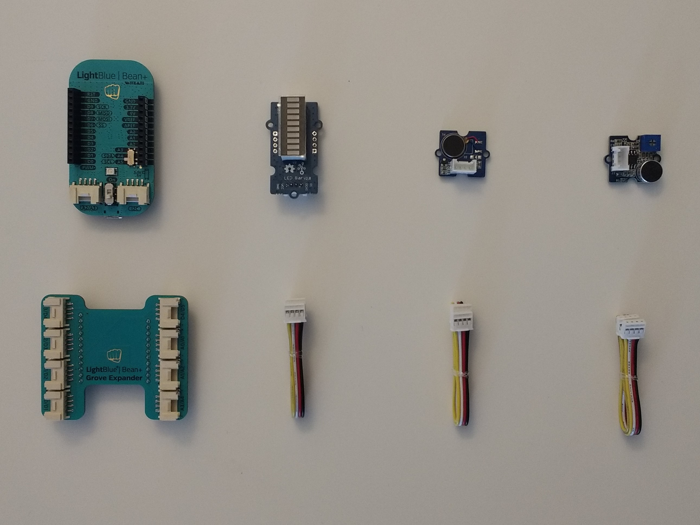
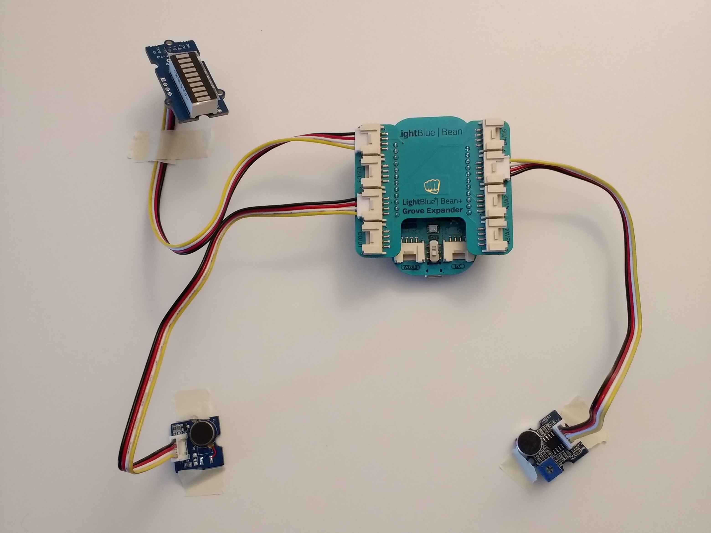
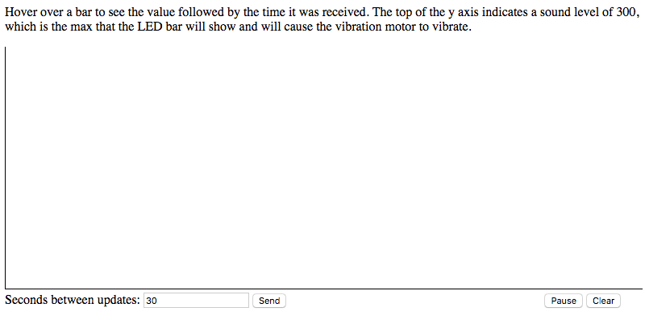

The purpose of this device is to attempt to solve a noise problem in a space by providing occupants with feedback that encourages them to change their behavior. Feedback is given in the form of an LED scale with the number of lights indicating the level of loudness. A red light, accompanied by a vibration of the vibration motor, indicates that the surroundings are too loud. Loudness data that is shared with a server and passed along to a client website is used to depict the change in loudness over time, which could theoretically be used to determine whether the feedback is successfully leading people to adjust their behavior. Note that the loudness sensor used here is not high quality (did not reliably give accurate loudness readings), so if you wish to implement this on your own, I'd recommend using a higher quality one.
Step 1: Gather Materials
Required materials are:
- (x1) LightBlue Bean+ -- $55.00 here
- (x1) LightBlue Bean+ Grove Board -- $14.00 here
- (x1) Grove LED bar -- $3.90 here
- (x1) Grove vibration motor -- $2.90 here
- (x1) Grove loudness sensor -- $5.90 here
- (x3) Grove jumper wires -- should come with the above sensors
Step 2: Setup
- Install the Arduino IDE found here
- Install either the Bean Loader GUI or CLI by clicking one of the previous links and following the steps
- In Arduino IDE, under Tools menu, set the Board to LightBlue Bean+ and Programmer to Bean Loader
- Download zip file of Grove_LED_Bar library from Github, found here
- In Arduino IDE, under Sketch menu, choose Include Library and then Add .Zip Library. Select the Grove_LED_Bar zip file you downloaded and click Open.
Step 3: Bean Configuration
Set Bean+ to 5v using the switch on the device. Connect the LED Bar to port D3/D4, the Vibration Motor to port D1/D2, and the Loudness Sensor to port A0/A1 of Grove Board using the jumper wires. See the video above for a demonstration.
Step 4: Program Sketch
Create a new sketch and include the Grove_LED_Bar-master library (Sketch->Include Library->Grove_LED_Bar-master). Then add the following code to the file. Feel free to choose different values for the maximum loudness that the LED bar will map to (constant MAX_LOUD) and the time between loudness readings (constant SEC_DELAY).
#define NUM_LEDS 10 //number of LEDs on the LED bar
#define MAX_LOUD 300 //the sound level at which to indicate red on the LEDs and vibrate the vibration motor
#define SEC_DELAY 1 //time between loudness readings
Grove_LED_Bar LEDBar(4,3,0); //LED bar at port D3/D4
const int pinVibrate = 1; //vibration motor at port D1/D2
const int pinLoudness = 0; //loudness sensor at port A0/A1
int secCount = 0; //number of seconds since last sending readings to server
int loudSum = 0; //sum of loudness readings between the times that the average reading is sent
int secForAvg = 30; //seconds between sending loudness readings to server
bool sendVals = true; //whether or not to send values to the server
/*establish inputs/outputs and clear scratch 1*/
void setup() {
Serial.begin(9600);
LEDBar.begin();
pinMode(pinVibrate,OUTPUT);
pinMode(pinLoudness,INPUT);
Bean.enableWakeOnConnect(true);
uint8_t buffer[1] = {' '};
Bean.setScratchData(1,buffer,1);
}
void loop() {
bool connected = Bean.getConnectionState();
int loudVal = analogRead(pinLoudness); //read loudness
/*if connected to server*/
if(connected){
checkSecondsForAvg(); //change seconds between reporting values if change requested
secCount++;
loudSum += loudVal;
/*if client is accepting values and the designated amount of time has passed*/
if(sendVals && secCount >= (secForAvg/SEC_DELAY)){
//blink LED white
delay(10);
Bean.setLed(255,255,255);
delay(250);
Bean.setLed(0,0,0);
delay(10);
//set scratch 2 to loudness value
String loudStr = "" + (String) (loudSum/secCount);
uint8_t loudBuffer[10];
for(int i=0; i < loudStr.length(); i++){
loudBuffer[i] = loudStr.charAt(i);
}
Bean.setScratchData(2,loudBuffer,loudStr.length());
//reset variables
secCount = 0;
loudSum = 0;
}
}
//if loudness value above the max, set to max
if(loudVal > MAX_LOUD){
loudVal = MAX_LOUD;
}
uint8_t ledLevel = map(loudVal, 0, MAX_LOUD, 1, NUM_LEDS); //map leds to loudness
//set LEDs based on mapping
for(int i = 0; i < NUM_LEDS; i++){
if(i <= ledLevel){
LEDBar.setLed(NUM_LEDS - i,1);
}
else{
LEDBar.setLed(NUM_LEDS - i,0);
}
}
//vibrate motor if high loudness
if(ledLevel >= NUM_LEDS - 1){
digitalWrite(pinVibrate,HIGH);
}
else{
digitalWrite(pinVibrate,LOW);
}
delay(SEC_DELAY * 1000);
}
/*check scratch 1 and update seconds between loudness value reports if needed*/
void checkSecondsForAvg(){
//read scratch data
ScratchData scratchCommand = Bean.readScratchData(1);
String strCmd = "";
for(int i=0; i < scratchCommand.length; i++){
strCmd += (String)(char)scratchCommand.data[i];
}
//if scratch has been updated
if(strCmd != " "){
delay(10);
//if signal to pause, stop sending values and blink led red
if(strCmd.toInt() == -1){
sendVals = false;
Bean.setLed(255,0,0);
}
else{ //update seconds between reports and blink led blue
secCount = 0;
loudSum = 0;
sendVals = true;
secForAvg = strCmd.toInt();
Bean.setLed(0,255,0);
}
delay(250);
Bean.setLed(0,0,0);
delay(10);
}
//clear scratch 1
uint8_t buffer[1] = {' '};
Bean.setScratchData(1,buffer,1);
}
Compile the code and upload the sketch. Turn on your Bean+. From either the Bean Loader CLI or GUI, program the sketch to the LightBlue Bean+ device. For instructions on how to do so, consult the website from which you downloaded the CLI/GUI.
Once programmed, the Bean+ should behave as shown in the video below. Note that this loudness sensor operates by reading vibrations, so the source of the sound must be directly aimed at the sensor. The LED bar level will rise (the bar is upside down in the video) as louder sound is detected and the vibration motor will vibrate when the LED level reaches its maximum (red). In the video below, this vibration is very subtle so you'll have to pay close attention to the motor to notice it.
Step 5: Server JavaScript
First, create a JavaScript file called server.js and add the following code. Find and replace the string "My Device Name" with the name of your device. Feel free to omit console.log lines. These are just handy for debugging and monitoring what's going on server-side.
var noble = require("noble");
var exitHandlerBound = false;
var maxPeripherals = 1; //max # of beans to connect to
var peripherals = []; //array of devices connected to
var http = require("http");
var server = http.createServer(function(request, response){});
/*listen on a port*/
server.listen(1234,function(){
console.log("Server is listening on 1234");
});
var WebSocketServer = require("websocket").server;
var utf8 = require("utf8");
var wsServer = new WebSocketServer({httpServer:server});
var client;
/*accepts client requesst to connect*/
wsServer.on('request',function(request){
client = request.accept(null,request.origin);
console.log("connection accepted");
/*when receive a message from the client*/
client.on("message",function(message){
var msgString = message.utf8Data;
//write value received from client to scratch 1 of peripheral
if(peripherals.length == 1){
peripherals[0]['characteristics'][0].write(
new Buffer(msgString,"binary"),true,function(error){
console.log("send message: " + msgString);
}
);
}
});
/*when the client disconnects*/
client.on("close",function(reasonCode,description){
console.log(client.remoteAddress + " disconnected");
delete client;
});
}); //on request
/*scan for bluetooth devices*/
noble.on("stateChange",function(state){
if (state === "poweredOn"){
console.log("Powered On");
noble.startScanning(["a495ff10c5b14b44b5121370f02d74de"],false);
}
else{
noble.stopScanning();
}
}); //on state change
/*when find device, connect to it*/
noble.on("discover",function(peripheral){
var desiredDevices = ["My Device Name"]; //replace this with the name of your device
if(peripheral.advertisement.localName &&
desiredDevices.indexOf(peripheral.advertisement.localName) > -1){
console.log("found device: " + peripheral.advertisement.localName);
console.log("Device UUID: " + peripheral.uuid);
console.log("Advertising: " + peripheral.advertisement.serviceUuids);
console.log();
peripheral.connect(connect.bind({peripheral:peripheral}));
}
}); //on discover
/*connect to device and stop scanning*/
var connect = function(err){
if(err) throw err;
console.log("Connection to: " + this.peripheral.uuid);
peripherals[0] = {};
peripherals[0]['peripheral'] = this.peripheral;
if(peripherals.length >= maxPeripherals){
noble.stopScanning();
console.log("Scanning stopped, max peripherals reached");
}
if(!exitHandlerBound){
exitHandlerBound = true;
process.on("SIGINT",exitHandler);
}
noble.stopScanning();
this.peripheral.discoverServices([],setupService);
}; //connect
/*discover services and find the characteristic we want to establish notifications*/
var setupService = function(err,services){
if(err) throw err;
services.forEach(function(service){
if(service.uuid === "a495ff20c5b14b44b5121370f02d74de"){
console.log("found the uuid");
var characteristicsUUIDs = ["a495ff21c5b14b44b5121370f02d74de",
"a495ff22c5b14b44b5121370f02d74de",
"a495ff23c5b14b44b5121370f02d74de",
"a495ff24c5b14b44b5121370f02d74de",
"a495ff25c5b14b44b5121370f02d74de"];
service.discoverCharacteristics(characteristicsUUIDs,function(error,characteristics){
console.log("got characteristics");
peripherals[0]['characteristics'] = characteristics;
requestNotify(characteristics[1]); //notify client if 2nd scratch changes
});
}
}); //foreach
}; //setupService
/*send client data from scratch*/
var requestNotify = function(characteristic){
characteristic.on("read",function(data, isNotification){
var dataString = data.toString('ascii').trim();
console.log(dataString);
if(client){
client.sendUTF(utf8.encode(dataString));
}
}); //on read
//get updates when scratch value changes
characteristic.notify(true, function(error){
console.log('turned on notifications ' + (error ? 'with error' : 'without error'));
});
} //requestNotify
/*disconnect from peripherals*/
var exitHandler = function exitHandler(){
peripherals.forEach(function(peripheral){
peripheral['peripheral'].disconnect(function(){});
});
setTimeout(function(){
process.exit();
},2000);
}
process.stdin.resume(); //avoid process closing immediately
If you didn't install node.js in a previous step, do so now. Then open command prompt or terminal, navigate to the directory that your server.js file is in, and run npm install three times: once for noble, once for websocket, and once for utf8. These commands should add all three packages to a node_modules folder in your current directory.
Step 6: Webpage Markup and Style
Create an HTML file called index.html and add the following:
<!DOCTYPE html>
<html>
<head>
<title>Loudness Graph</title>
<link rel="stylesheet" type="text/css" media="screen" href="style.css">
<script type = "text/javascript" src="jquery-3.2.1.min.js"></script>
</head>
<body>
<p>
Hover over a bar to see the value followed by the time it was received.
The top of the y axis indicates a sound level of 300,
which is the max that the LED bar will show and will cause the vibration motor to vibrate.
</p>
<p id="timezone"><!--timezone will be added here--></p>
<div id = "graph">
<!--histogram will be generated here-->
</div>
<!--controls for changing the # of seconds between receiving values,
pausing value sending, and clearing histogram-->
<div id = "controls">
<p>Seconds between updates: </p><input type="text" name="seconds" id="seconds" value="30">
<input type = "button" id = "sendBtn" value = "Send" onclick = "sendSecondsForAvg()">
<input type = "button" id = "pauseBtn" value = "Pause" onclick = "startStopSending()">
<input type = "button" id = "clearBtn" value = "Clear" onclick = "clearBars()">
</div>
<script src="main.js"></script>
</body>
</html>
Next, create a CSS file called style.css and add the following:
div#graph{
display: inline-block;
border-bottom: 1px solid black;
border-left: 1px solid black;
height: 300px;
width: 100%;
}
div.bar{
position: relative;
display: block;
background-color: orange;
max-width: 30px;
float: left;
}
div.bar:hover{
cursor: pointer;
}
input#pauseBtn{
margin-left: 40%;
}
div#controls p{
display: inline;
}
If you were to open your HTML file in a browser without connecting to the server, it should look like this:
Step 7: Client JavaScript
Download jquery-3.2.1.min.js from here and create a new JavaScript file called main.js, which you'll save in the same place as jquery. Add the following code to this new file:
var ws = new WebSocket('ws://localhost:1234');
/*gets timezone when connected to server*/
ws.onopen = function(){
console.log("connected!!!");
var timezoneTxt = document.createTextNode("**All times below in " + getTimezone() + "**");
document.getElementById("timezone").appendChild(timezoneTxt);
}
/*logs error*/
ws.onerror = function(error){
console.log("error: " + error);
}
/*adds a new bar to the histogram once a new loudness value is received*/
ws.addEventListener("message", function(e){
var loudVal = e.data;
addBar(loudVal, getCurTime());
});
/*adds a bar to the histogram with a height of value
and a tooltip providing value and time*/
function addBar(value,time){
var graphDiv = $('#graph');
var newBar = $('<div></div>');
newBar.addClass("bar");
newBar.height(value + "px");
if(graphDiv.height() == 0){
graphDiv.height(value + "px");
}
newBar.css('top', (graphDiv.height() - value) + "px");
newBar.attr('title',value + ", " + time);
graphDiv.append(newBar);
var numBars = $('.bar').length;
$('.bar').width((Math.floor(graphDiv.width() / numBars)) + "px");
}
/*updates Bean's scratch with new number of seconds to wait between sending values*/
function sendSecondsForAvg(){
var newVal = $('#seconds').val();
ws.send(newVal);
}
/*removes all histogram bars from graph*/
function clearBars(){
$.each($('.bar'), function(index, value){
value.remove();
});
}
/*signals the Bean to stop or start sending values and switches text
on the button from Pause to Start or vice versa*/
function startStopSending(){
var curVal = $('#pauseBtn').val();
if(curVal == 'Pause'){
$('#pauseBtn').val('Start');
ws.send("-1");
}
else{
$('#pauseBtn').val('Pause');
ws.send($('#seconds').val());
}
}
/*returns formatted current time*/
function getCurTime(){
var now = new Date();
var year = now.getFullYear() % 100;
var minutes = now.getMinutes();
minutes = (minutes.length == 1) ? "0" : "" + minutes;
var seconds = now.getSeconds();
seconds = (seconds.length == 1) ? "0" : "" + seconds;
var hours = now.getHours();
var amPm = "am"
if (hours >= 12){
amPm = "pm"
if(hours > 12){
hours -= 12;
}
}
if(hours == 0){
hours = 12;
}
var date = now.getMonth() + "/" + now.getDay() + "/" + year;
var time = now.getHours() + ":" + minutes + ":" + seconds;
return date + " " + time;
}
/*returns 3 character string indicating timezone*/
function getTimezone(){
var dateStr = (new Date()).toString();
var dateSplit = dateStr.split(" ");
return dateSplit[dateSplit.length - 1].substring(1,4);
}
Step 8: Running
To run the entire project, first program the sketch to the LightBlue Bean+ as described previously. Then disconnect from the Bean Loader GUI if you're using it. Navigate to the folder that your server.js file is in and run it using the command node server in terminal or command prompt. You should see output indicating that the server has found and connected to your Bean. Next, open index.html in a browser. Once this connects to the server, the timezone will be displayed. As the Bean sets the scratch to the loudness value, you should see bars appear on the histogram on your webpage. Hovering over the bars in your histogram will give you the loudness value along with the time it was read. You can use the controls below the graph to adjust how frequently the client receives a new loudness value, to pause (or restart) the device's reporting of loudness values, and to clear all bars from the graph.
On the bean side of things, the LED bar and the vibration motor behave the same as in step 4. In addition, the LED on the device changes color to indicate what action is being performed:
- White -- Setting the scratch to a value
- Red -- Pausing loudness value reports
- Green -- Adjusting the time between scratch updates or resuming loudness value reports after a pause
above is a demo of the functionality that I just described. Be sure to pay attention to LED color flashes.